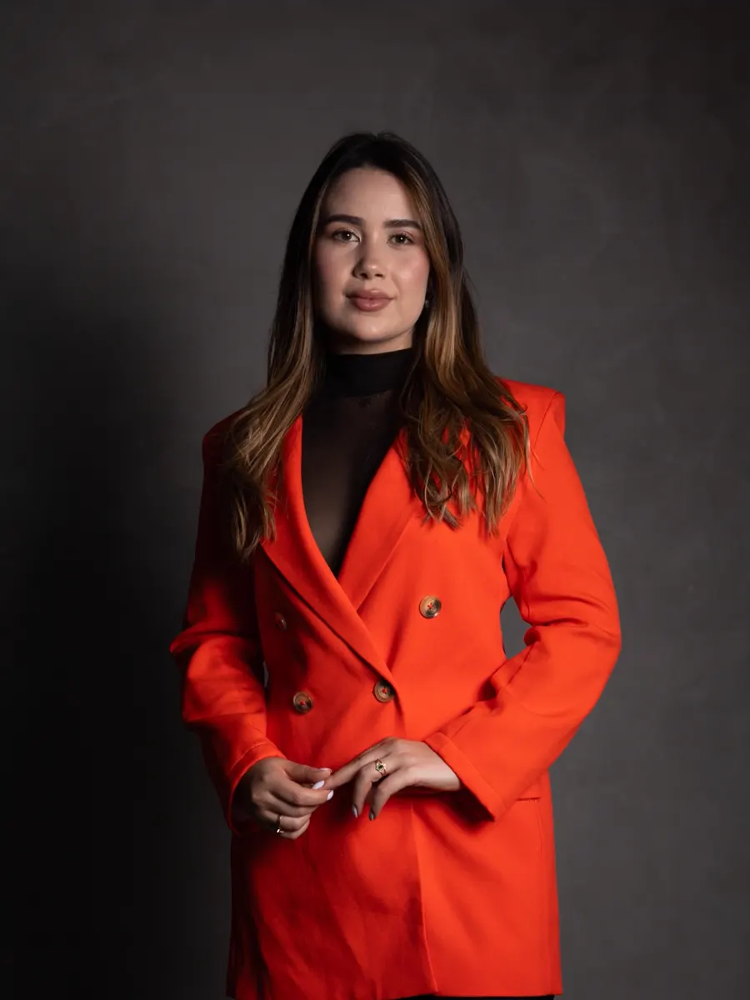
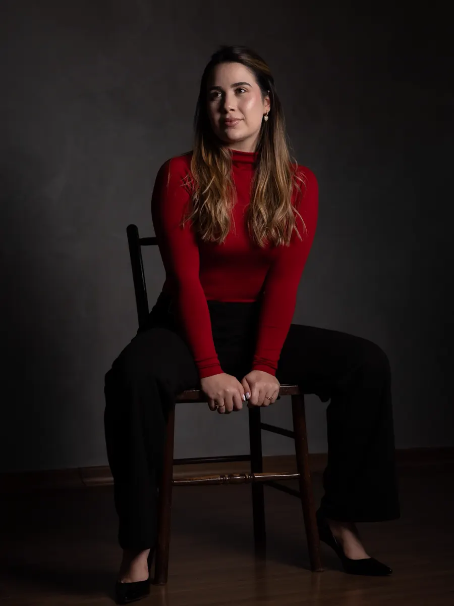
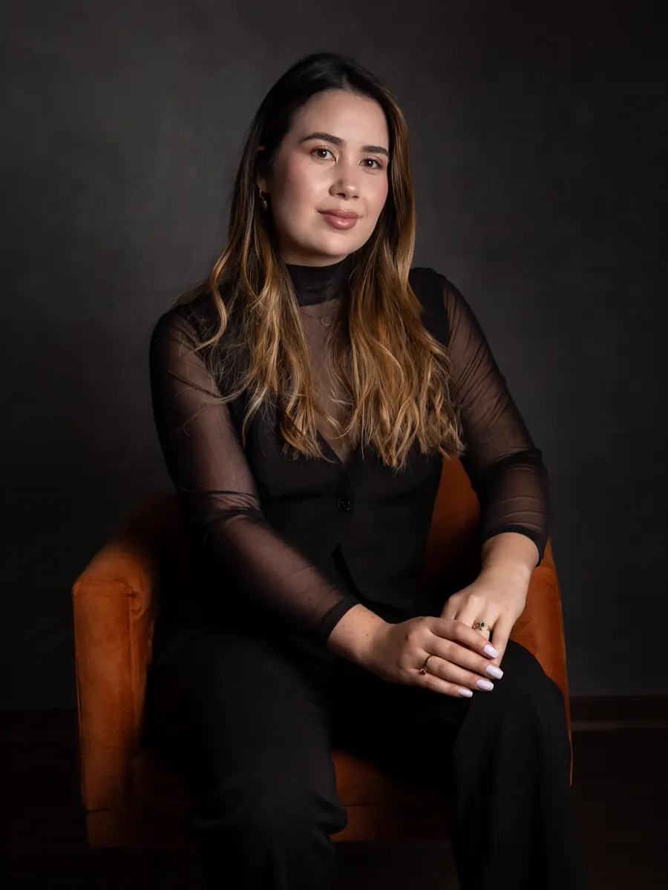

Presencial
Alpinópolis/MG
No consultório próprio, inaugurado em 2025. Um espaço de escuta para entender a sua rotina e montar o seu plano com calma.
Agendar presencial pelo WhatsApp (abre em nova aba)Nutricionista em Alpinópolis/MG e online
Dieta não é castigo, nem receita pronta. É um plano alimentar pensado para a sua rotina, individual e possível mesmo na correria.
O botão abre uma conversa no WhatsApp.

Como funciona
Conta o que está buscando e escolhe entre a consulta presencial, em Alpinópolis/MG, ou online.
Seus horários, o que você gosta de comer e as suas dificuldades, com escuta e sem julgamentos.
Um plano pensado para a sua vida real, simples e possível de manter mesmo na correria.
O caminho é ajustado ao longo do processo, olhando também para o que muda além do peso.
Dúvidas sobre horários e valores? Pergunte pelo WhatsApp (abre em nova aba)

Consultas
Eu acolho a sua rotina e as suas dificuldades, sem julgamentos e com boas estratégias. Juntas, organizamos uma alimentação que caiba na sua vida real.
Presencial
No consultório próprio, inaugurado em 2025. Um espaço de escuta para entender a sua rotina e montar o seu plano com calma.
Agendar presencial pelo WhatsApp (abre em nova aba)Online
Para quem mora longe ou passa o dia correndo e sente a fome chegar com tudo à noite.
Agendar online pelo WhatsApp (abre em nova aba)
Sobre
“A nutrição vai muito além de um plano alimentar. É sobre entender a rotina, respeitar o momento e celebrar cada conquista.”
Sou nutricionista em Alpinópolis/MG. Desde que abri meu consultório, foram meses de histórias reais, escuta e transformação — dentro e fora do prato. Meu trabalho é caminhar junto com você rumo a uma relação mais leve com a comida e com o corpo.
Fotos: @fotospormari_
Abordagem
Ele tem idas e vindas, dias mais fáceis e dias em que parece impossível. E tudo bem: o resultado vem da constância e das pequenas escolhas do dia a dia, não da perfeição.
Um plano feito para outra pessoa dificilmente cabe na sua vida. O seu parte da sua rotina, dos seus horários e do que você gosta de comer.
Quando o plano corta demais, fica difícil sustentar. Nada de “aguentar firme por alguns dias”: as estratégias cabem na correria.
Quando o plano não cabe na sua rotina, manter a constância fica mais difícil. Pequenas mudanças, uma de cada vez, se acumulam.
Deslizes fazem parte do processo. Nenhum alimento sozinho é o vilão — nem o pão francês. Importa como e quando.
Além da balança: mais força, roupas mais soltas e melhor recuperação do treino também são sinais de progresso.
Dúvidas
Pelo WhatsApp. Toque em “Agendar pelo WhatsApp” e conte se prefere a consulta presencial, em Alpinópolis/MG, ou online.
Não. Além do consultório em Alpinópolis/MG, há atendimento online para quem está em outra cidade.
Em Alpinópolis/MG. Para saber o endereço e os horários disponíveis, chame no WhatsApp.
Não. O plano parte do que você gosta de comer e da sua rotina. Um alimento sozinho não é o problema: o que faz diferença é como, quando e quanto.
O peso é só um dos sinais. Mais força, roupas mais soltas, mais definição e melhor recuperação do treino também mostram que o corpo está respondendo.
Me chama e vamos montar o seu plano alimentar — de forma leve, duradoura e de verdade.
Agendar pelo WhatsApp (abre em nova aba)Prefere o Instagram? Mande uma mensagem por lá (abre em nova aba)